Questão 1 · Ultrassonograf ia no primeiro trimestre · 4000185182Gestante comparece a emergência com queixa de sangramento vaginal, indolor. A idade gestacional atual e pela data da u visualiza-se colo i amolecido, globoso, colo fechado. Nesse atendimento, foi realizada ultrassonogra a que constatou atividade cardi com frequência de 168 bpm, conforme imagem a seguir. Assinale a alternativa que descreve a estrutura indicada pela seta.
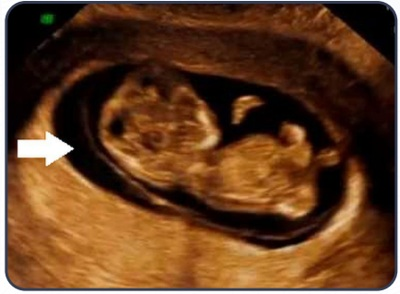
A Hematoma retrocoriônico.
B Hematoma retroamnio
C Descolamento trofobla
D Cavidade exocelômica.
Questão 2 · Sistema endócrino e metabolismo · 4000185181Em mulheres gra ma ̃ e, o feto e a placenta. Nesse contexto de normalidade, a gravidez e
A Pro
B Anti-inflamato
C Anti-inflamato
D Pro
Questão 3 · Sistema cardiovascular e hematopoiético · 4000185180Primigesta, 19 anos de idade, 23 semanas de gestação, comparece a consulta pré-natal com relato de episódios esporádicos de tontura, falta de ar e fadiga. Nega comorbidades. Traz laudo de eletrocardiograma realizado há três dias que revela: taquicardia, arritmia sinusal, extrassístoles e desvio de eixo elétrico para esquerda com alterações de repolarização. Nesse caso, o eletrocardiograma é sugestivo de:
A Wolf-Parkinson-White.
B Normalidade.
C Estenose mitral.
D Miocardiopatia hipertrófica.
Questão 4 · Assistência prénatal · 4000185179Primigesta, 17 anos de idade, comparece para a primeira consulta de pre doenças ou complicações de sau dessa paciente e
A Consumir dois copos de leite por dia e vegetais ricos em ca
B Realizar suplementação dia
C Consumir um copo de leite por dia e suplementaça
D Realizar suplementaça
Revisar: possível letra faltando em alt A
Questão 5 · Cerclagem uterina · Tratamento da insuf iciência istmocervical · 4000185178Gestante com 12 semanas relata histo semanas; ambos os partos foram ra a ultrassonografia transvaginal, que revelou a imagem apresentada. Para promover melhor resultado nessa gestaça
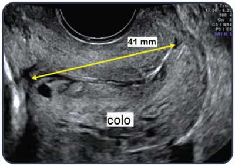
A Realizar a cerclagem do colo uterino nas pro
B Adotar conduta expectante e controlar o comprimento do colo a cada duas semanas.
C Adotar conduta expectante e repetir o exame transvaginal do colo com 22 a 24 semanas.
D Realizar a pesquisa de bronectina em secreça
Questão 6 · Abortamento incompleto · Curetagem uterina CTG · 4000185177Primigesta, 24 anos de idade, 16 semanas de gestaça exame a ̀ palpaça exame especular: sai posterior, u adotada para o melhor cuidado dessa paciente?
A Adotar conduta conservadora por 48 horas para tentar preservar a gestaça
B Realizar imediatamente a curetagem para esvaziamento uterino.
C Promover esvaziamento uterino com misoprostol seguido de curetagem.
D Realizar histerectomia total para se evitar o agravamento da infecça
Questão 7 · Clínico · 4000185176Mulher de 20 anos de idade vem para atendimento de emergência por sangramento vaginal abundante e dor abdominal. Nega febre, faz contracepça abdome pouco doloroso, sem rigidez, sem massas palpa pequeno, sem massas palpa nesse momento revelou a imagem apresentada. Qual e
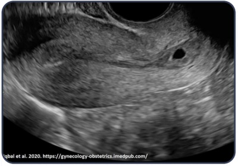
A Repouso e repetir ultrassonografia em sete dias.
B Iniciar tratamento com metotrexato.
C Realizar esvaziamento uterino por curetagem.
D Realizar videolaparoscopia para tratamento ciru
Questão 8 · Seguimento pós molar · 4000185175Mulher de 38 anos de idade, com duas cesarianas pre dosagens de beta-hCG plasma po ́ s-esvaziamento); segunda: 600 mUI/mL em 30/10; terceira: 500 mUI/mL em 07/11; quarta: 450 mUI/mL em 14/11; quinta: 420mUI/mL em 21/11. Qual e
A Realizar ecodoppler transvaginal, raio x de to
B Repetir a dosagem de beta-hCG se
C Realizar exame ginecolo
D Realizar tomografia computadorizada de abdomen e to
Questão 9 · Imunizaçao na gestação · 4000185174Gestante de 16 semanas, em acompanhamento pre u ́ ltima gestaça uma dose de dTpa (difteria, te recomendaço orientaça
A Apenas uma dose de dTPa com 20 semanas.
B Esquema vacinal de três doses de vacina contra a hepatite B.
C Uma dose de dTpa com 20 semanas e uma dose de vacina contra a hepatite B.
D Uma dose de dT neste momento e uma dose de dTPa com 20 semanas.
Questão 10 · Predição e prevenção · 4000185173Gestante de 15 semanas, G2 P1, refere pre semanas), sem necessidade de uso de medicac fazendo uso de aspirina (AAS), 100 mg por dia, desde 12 semanas. Traz exame de ultrassonogra a com resultado normal na avaliac melhor resultado nessa gestac
A Suspender AAS e manter acompanhamento de rotina (risco habitual).
B Manter AAS e iniciar carbonato de ca
C Manter AAS e iniciar heparina de baixo peso molecular pro la
D Suspender AAS e iniciar carbonato de ca
Revisar: possível letra faltando em alt B; possível letra faltando em alt D
Questão 11 · Diagnóstico de distocias no partograma · 4000185172Primigesta, 25 anos de idade, 41 semanas de gestaça seguir. Nesse caso, a prova
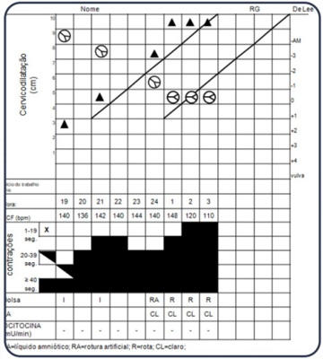
A Desproporça
B Desproporça
C Distocia de rotaça
D Exausta
Questão 12 · Técnica cirurgica · Indicações de cesárea · 4000185171Primigesta, 40 semanas, internada em trabalho de parto esponta caracterizada a desproporc materno no preparo para a cesa Com base em evide procedimentos indicados para o melhor resultado materno nesse caso.
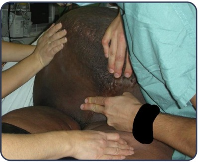
A Laparotomia por incisa
B Retirada manual da placenta apo
C Laparotomia por incisa
D Retirada da placenta por trac
Questão 13 · Conduta · Interpretação · 4000185170Parturiente, G3 P2 (partos vaginais), 39 semanas de gestac fortes, de 40 segundos de durac i ́ ntegra, OEA e plano +3 de De Lee. Realizada cardiotocogra a, foi constatado o trac A melhor conduta a ser adotada nesse momento e
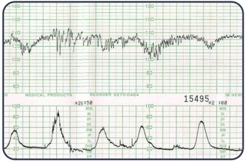
A Indicar a interrupc
B Estimular os puxos maternos para abreviac
C Amniotomia e amnioinfusa
D Posicionar em decu
Questão 14 · Conduta · Interpretação · Indicações · 4000185169Primigesta, 28 anos de idade, 30 semanas de gestac de cardiotocografia conforme apresentado na imagem. Nesse caso, a denominac melhor cuidado da gestante, respectivamente, sa

A Hiporeativo; interromper a gestac
B Na
C Na
D Inativo; realizar cardiotocografia computadorizada.
Questão 15 · Métodos de indução do parto · Indicações e contraindicações · 4000185168Gestante de 39 semanas, G2 P1 (cesa de parto vaginal. Ao exame obste i ́ ntegra, colo apagado 50%, medianizado, amolecido, pe cardiotocogra a normal. E de 2 mUI/min, a cada 10 minutos, de acordo com o padra melhor resultado materno e fetal?
A Suspender a ocitocina, pois a cesa
B O regime utilizado de alta dose de ocitocina esta
C Os incrementos na dose de ocitocina na
D O i
Questão 16 · Complicações · Tratamento na HPP · 4000185167No que se refere ao uso do bala
A Esta
B Esta
C Pode ser utilizado nos casos de hemorragia apo
D Pode ser utilizado nos casos de hemorragia relacionada a
Questão 17 · Depressão Puerperal · 4000185166Primi sertralina e psicoterapia durante dois anos. A paciente suspendeu o tratamento por conta pro cli nica. Relata tristeza profunda, insônia, exausta ́ permanecer junto ao rece todo o tempo na cama. Para o melhor cuidado dessa paciente, como deve ser a conduça
A Evitar tratamento medicamentoso devido a
B Iniciar tratamento medicamentoso, com uso da mesma droga antidepressiva utilizada anteriormente.
C Iniciar tratamento medicamentoso com outra droga antidepressiva, devido ao risco de falência terapêutica.
D Iniciar tratamento medicamento com progesterona, cuja e ca
Revisar: possível letra faltando em alt D
Questão 18 · Progesterona vaginal · 4000185165Gestante de 25 anos de idade, G2 P1 (parto vaginal espontâneo), 18 semanas de gestaça natal de alto risco, pois o parto anterior foi pre ultrassonogra a transvaginal nesse dia, com 18 semanas, e apresentou medida do colo uterino de 36 mm. Diante dessas informaço
A Reencaminhar ao pre
B Prescrever progesterona via vaginal.
C Indicar uso de progesterona e de pessa
D Indicar uso de progesterona e cerclagem.
Questão 19 · Sulf ato de magnésio · 4000185164Considere as tre d e membranas ha Cardiotocografia reativa. Perfil bio (parto anterior com 33 semanas), com 30 semanas interna por dina exame, tem colo dilatado para 5 cm, apresentac normais. Caso 3. Primigesta de 38 anos de idade, 26 semanas, interna por crescimento fetal no percentil 3 para a idade gestacional e Doppler de arte antero esta ́ indicado em qual(is) dessa(s) situac
A Caso 1, apenas.
B Caso 2, apenas.
C Caso 3, apenas.
D Casos 1 e 2, apenas.
Questão 20 · Síndrome da transf usão f etof etal STFF · 4000185163Gestac de dopplervelocimetria esta A imagem a seguir representa um dos fetos. Considerando a siopatologia dessa si
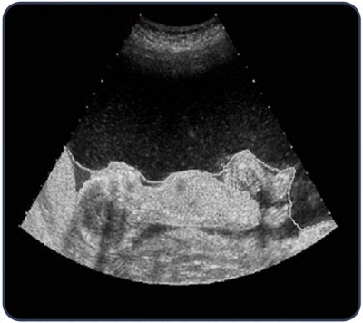
A Doador, que recebe sangue pelas anastomoses placenta
B Doador, com oligohidra
C Receptor, com polidra
D Receptor, com insu cie
Questão 21 · Conduta na RPM entre 24 a 33 67 semanas · 4000185162Primigesta com 30 semanas queixa de perda de li altura uterina de 29 cm, apresentac li ́ quido amnio Ale ́ m da pesquisa infecciosa, para o melhor cuidado dessa paciente, a conduta a ser adotada e
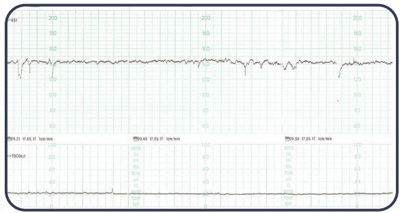
A Administrar sulfato de magne
B Administrar antibio
C Administrar sulfato de magne
D Administrar antibio
Questão 22 · Manejo do parto · 4000185161Gestante de 34 semanas, G4 P3 (partos normais), refere dor abdominal e sangramento vaginal ha PA = 140 x 90 mmHg; FC = 75 bpm; hipertonia uterina e BCF inaudi colo, em pequena quantidade. Toque vaginal: colo pe realizada ultrassonogra a que confirmou o adotada?
A Realizar cesariana imediata pelo risco de desenvolver coagulopatia e u
B Realizar amniotomia e aguardar parto vaginal em ate
C Aguardar exames de coagulaça
D Iniciar infusa
Questão 23 · Etiologia e f isiopatologia · 4000185160A complexa siopatologia da pre exacerbac assinale a alternativa que identifica essa fisiopatologia.
A Falha na invasa
B Remodelac
C Isquemia placenta
D Hipoperfusa
Questão 24 · Conduta · Diagnóstico · Classif icação · 4000185159Primigesta, 31 semanas de gestac a ecocardiogra a fetal e as sorologias maternas apresentaram resultados dentro da normalidade. No exame de ultrassonogra a, o peso fetal encontra-se entre os percentis 3 e 10, volume de li biometria fetal conforme gra Nesse caso, o diagno
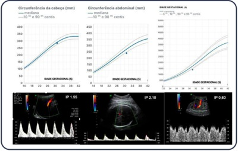
A Restric
B Restric
C Restric
D Feto pequeno constitucional, realizar corticoterapia e reavaliar em sete dias.
Questão 25 · Trombose na gestação · 4000185158Primigesta de 32 anos, portadora de doença renal crônica, com seis semanas de gravidez, refere tromboembolismo pulmonar há três anos, quando fazia uso de anticoncepcional oral combinado. A pesquisa laboratorial para trombo lias é negativa.Para o cuidado dessa paciente, qual é o esquema mais adequado para tromboprofilaxia?
A Mecânica com meias compressivas.
B Heparina de baixo peso molecular.
C Heparina não fracionada.
D Rivaroxabana.
Questão 26 · Manejo do parto · 4000185157Gestante de 27 semanas, sem comorbidades e com histo quadro de o Federac misoprostol?
A Na
B 25 mcg vaginal de seis em seis horas.
C 100 mcg vaginal de quatro em quatro horas.
D 400 mcg vaginal de 12 em 12 horas.
Questão 27 · Controle glicêmico · Tratamento · Investigação diagnóstica admissional · 4000185156Gestante na 27a semana, diabe um dia. Faz uso de insulina, mas, nesse dia, na u ltima semana. Ao exame: FC = 110 bpm; FR = 28 mvm; altura uterina de 29 cm; FCF = 160bpm; ause ́ contrac principal hipo
A Gasometria e urina I; realizar hidratac
B Hemograma e urocultura; iniciar antibioticoterapia e insulinoterapia.
C Urina I e urocultura; realizar hidratac
D Gasometria e urina I; iniciar insulinoterapia intramuscular.
Questão 28 · Conduta · Tratamento medicamentoso · 4000185155Mulher de 36 anos de idade apresenta diagno em uso de glibenclamida 7,5 mg/dia e a 140 mg/dL, 2 horas po controle metabo
A Aumentar dose de glibenclamida para 10 mg/dia ate
B Acrescentar insulina em regime basal pela manha
C Substituir glibenclamida para insulina em regime basal e bolus.
D Acrescentar metformina de liberaça
Questão 29 · Fisiopatologia · Herpes na gestação · Tratamento · 4000185154Em relaça
A O raio x de to
B Recomenda-se terapia com antiviral intravenoso para gestantes com varicela-zoster aguda que requerem hospitalizaça
C A maioria das gestantes com varicela necessita de hospitalizaça
D Diante de um quadro de pneumonia por varicela-zoster na gestaça
Questão 30 · Tratamento da síf ilis na gestação · 4000185153Gestante com idade gestacional de 10 semanas realizou exames pre 1/32. Refere que teve, em gravidez anterior, o mesmo teste com titulac e, nessa ocasia caso?
A Na
B Realizar confirmaça
C Iniciar tratamento da si
D Realizar dessensibilizac
Questão 31 · Covid na gestação · 4000185152Mulher de 33 anos de idade, 3G 2P, 31 semanas de gestaça sintomas. Ao exame diagno
A Swab de oro-nasofaringe para RT-PCR; internaça
B Sorologia IgG e IgM; controle ambulatorial frequente sem necessidade de de suporte ventilato
C Swab de oro-nasofaringe para RT-PCR; suporte de O₂ por ma
D Sorologia para pesquisa de anti
Questão 32 · Covid na gestação · 4000185151Gestante, 28 anos de idade, G3 P2, 37 semanas de gestaça de garganta e obstruc 37,8ºC; FC = 102 bpm; FR = 21 irpm; Sat O₂ = 97%; ausculta pulmonar normal. Ao exame obste de 34 cm, BCF = 156 bpm, ause 19 e a conduta preconizada, sa
A Leve; isolamento domiciliar, monitoramento materno, paracetamol para febre e azitromicina para infecc
B Leve; isolamento domiciliar, monitoramento materno, paracetamol para febre e estimular hidratac
C Moderado; internac
D Moderado; internac
Questão 33 · Hepatites na gestação · 4000185150Gestante, 29 anos de idade, G3 PN2, 32 semanas de gestaça trazendo resultado de HBsAg positivo e HbeAg positivo. Nesse cena materno e fetal e
A Avaliar a funça
B Avaliar a funça
C Realizar a cesariana pela transmissa
D Mensurar carga viral com 34 semanas e induzir parto vaginal com 39 semanas.
Questão 34 · Febre Reumática FR · 4000185149Gestante, 18 anos de idade, nove semanas de gravidez, cardiopata (estenose mitral moderada), queixa-se de edema em membros inferiores no nal da tarde. Procura o serviço para iniciar o acompanhamento pré-natal. Refere ter tido febre reumática na infância. Nesse caso, a conduta medicamentosa é prescrever:
A Digitálicos.
B Heparina de baixo peso molecular.
C Penicilia benzatina.
D Furosemida.
Questão 35 · Erupção polimórf ica da gestação · 4000185148Primigesta de 35 semanas refere aparecimento de leso pruriginosas, que se iniciaram no abdome e se espalharam rapidamente para as coxas, na alergias, uso de medicac Nesse caso, o diagno
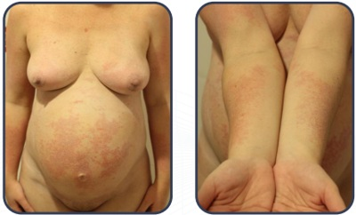
A Colestase da gravidez; a
B ̃ parto.
C ̃
D Psori
Questão 36 · Transtorno do Humor Bipolar THB · 4000185147Gestante de sete semanas, portadora de transtorno bipolar, interrompeu tratamento com carbonato de li gravidez. Questionada quanto aos sintomas, relata episo estado depressivo, com anedonia e anorexia ale melhor resultado perinatal e
A Reintroduzir carbonato de li
B Introduzir carbamazepina.
C Internar para eletroconvulsoterapia.
D Encaminhar para psicoterapia.
Questão 37 · Hipotireoidismo na gestação · 4000185146Primigesta, em acompanhamento pre gestacional, demonstra bom controle glice com 28 semanas), com TSH = 10 mUI/L. Diante desse resultado, o pro
A Dosar T3 para definir necessidade de tratamento.
B Iniciar tratamento com levotiroxina 25-50 mcg/dia.
C Iniciar tratamento com propiltiuracil 300 mg/dia.
D Manter acompanhamento cli
Questão 38 · HIVAIDS · Gestantes · 4000185145Multi <350 ce tuberculose. Nesse caso, como deve ser orientado o tratamento, visando o melhor cuidado materno?
A Iniciar tratamento imediato com isoniazida, independentemente do resultado da prova tuberculi
B Postergar o tratamento para o puerpe
C Tratar imediatamente, apo
D Iniciar tratamento com rifampicina e isoniazida para evitar o risco de resistência medicamentosa.
Questão 39 · Hemorragia intracraniana · 4000185144Com relaça
A A embriopatia ocorre quando a exposiça
B O risco de embriopatia e
C As alteraço
D A si
Questão 40 · Malária por P vivax ou P ovale · 4000185143Gestante de 10 semanas, proveniente do interior do Amazonas, foi diagnosticada com mala caso, qual e
A Cloroquina por três dias e cloroquina pro la
B Cloroquina associada a Primaquina por sete dias.
C Artemisina por três dias e Primaquina pro la
D Lumefantrina associada a Artemisina por sete dias.
Questão 41 · Principais apresentações clínicas · 4000185142Gestante de 26 semanas, assintoma O exame laboratoriais revelam: hemograma normal, TSH = 1,25 mU/L e anti-Ro = 25 U/ml (reagente). O exame ultrassonogra demonstrou anormalidades estruturais no feto e a avaliac seguir. Nesse caso, qual e
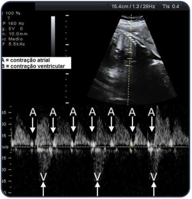
A Bloqueio cardi
B Bloqueio cardi
C Bloqueio cardi
D Fibroelastose endoca
Questão 42 · Malf ormações da Parede Abdominal · 4000185141Primigesta, 18 anos de idade, 30 semanas de gestac fetal, conforme imagem a seguir. Qual e
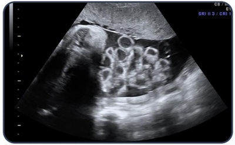
A Avaliac
B Seguimento ultrassonogra
C Indicar investigac
D Solicitar investigac
Questão 43 · Câncer de mama na gestante · 4000185140Gestante, 29 anos de idade, G3 PC1 A1, idade gestacional de 23 semanas, atendida no pré-natal de alto risco com quadro de mama direita edemaciada, hiperemiada, endurecida, que apresentou rápido crescimento nos últimos dois meses e nódulo axilar. Após propedêutica invasiva com mastologista, foi diagnosticada neoplasia de mama do tipo inflamatório, com acometimento de linfonodo axilar. Em relação à abordagem dessa paciente, qual é a orientação para o seu melhor cuidado?
A Aguardar o final da gestação para iniciar o tratamento quimioterápico.
B Interromper a gestação para iniciar o tratamento quimioterápico.
C Iniciar o tratamento quimioterápico, mesmo conhecendo os riscos fetais.
D Realizar mastectomia total de imediato e iniciar quimioterapia no puerpério.
Questão 44 · Ética em reprodução humana · Reprodução assistida · 4000185139Casal procura orientac tem antecedente de histerectomia e a cedente tempora partos bem-sucedidos por cesarianas, sem complicac conte
A O pre
B O histo
C A tia na
D E
Questão 45 · Palpação obstétrica manobras de LeopoldZweif el · 4000185138Desde 2015, a Organizac de parto por cesa grupos. As imagens a seguir representam os 10 grupos da Classi cac Assinale a alternativa que apresenta os cinco conceitos utilizados nessa classificac
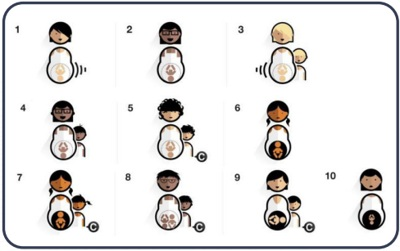
A Antecedente obste
B Nu
C Presenc
D Vitalidade fetal; antecedente obste
Questão 46 · Compressões torácicas · 4000185137Parturiente, 28 anos de idade, G1 P2 (partos vaginais), idade gestacional de 38 semanas, 5 cm de dilatac leito de pre como conduzir o caso de forma a ter o melhor resultado materno e perinatal?
A Desviar o u
B Encaminhar a paciente de volta ao bloco ciru
C Iniciar a ressuscitaça
D Iniciar compresso
Questão 47 · Avaliação do risco gestacional · Assistência prénatal · 4000185136Em primeira consulta de pre o melhor cuidado dessa gestante, a orientaça
A Evitar penetraça
B Manter ha
C Evitar relaço
D Manter atividade sexual do casal habitual entre a 6ª e 36ª semanas.
Questão 48 · Aspectos legais relacionados à gestação · 4000185135Mulher de 33 anos de idade, admitida em maternidade com diagno a induça ̀ afastamento das atividades do trabalho, essa paciente tem direito a afastamento remunerado por:
A 14 dias.
B 28 dias.
C 45 dias.
D 120 dias.
Questão 49 · Aspectos legais relacionados à gestação · 4000185134Gestante, 30 anos de idade, trabalha em uma indu no seu trabalho. Considerando que existe risco durante toda a gravidez, a empresa transfere a gestante para a func recepcionista. Nesse caso, de acordo com a legislaça
A Reduça
B Manutença
C Reduça
D Manutença
Questão 50 · Sigilo prof issional · Publicidade médica · 4000185133Me ́ dica ginecologista e obstetra possui um per l em rede social no qual divulga seu trabalho. Pretende divulgar fotos com depoimentos de suas pacientes. Acerca dos cuidados que essa pro ssional deve tomar, visando evitar delitos e assinale a alternativa correta. Respostas: 1 12 23 34 45
A Solicitar autorizaça
B Tomar o cuidado de utilizar arti
C Solicitar a
D Em nenhuma situaça